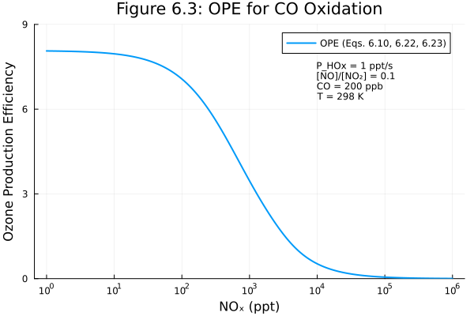
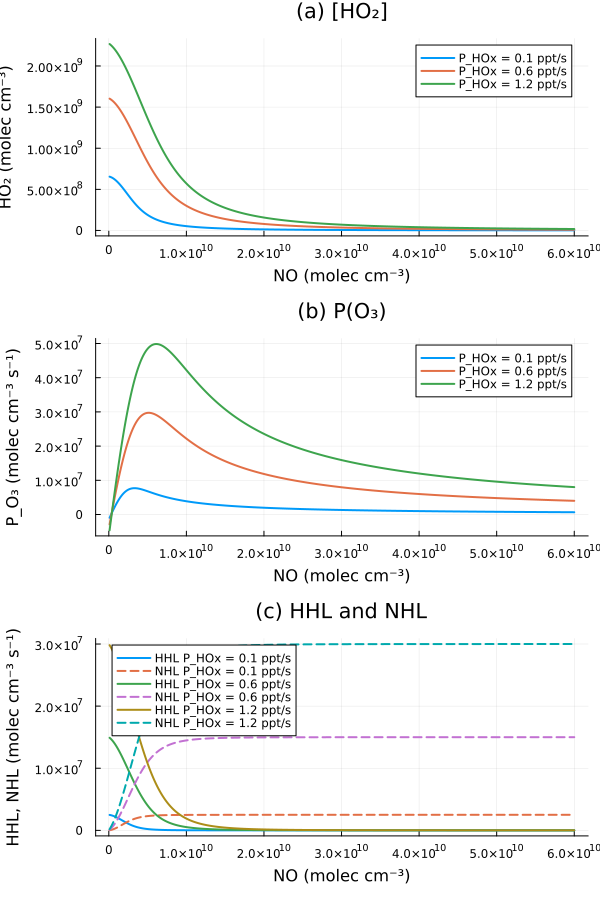

CO Oxidation
Overview
CO oxidation is the simplest hydrocarbon oxidation mechanism and illustrates the fundamental HOx cycling that drives tropospheric ozone production. The net reaction is:
CO + 2O2 + hv -> CO2 + O3The key feature is that OH is regenerated through the HO2 + NO reaction, allowing catalytic ozone production. The HOx chain length (number of OH-HO2 cycles before termination) and the Ozone Production Efficiency (OPE = moles O3 produced per mole NOx consumed) are key diagnostics.
Two components are provided:
COOxidation: Full CO oxidation diagnostic system (Eqs. 6.9-6.17)OzoneProductionEfficiency: OPE diagnostic (Eqs. 6.21-6.24)
Reference: Seinfeld, J.H. and Pandis, S.N. (2006). Atmospheric Chemistry and Physics: From Air Pollution to Climate Change, 2nd Edition. John Wiley & Sons. Section 6.3, pp. 212-219.
GasChem.COOxidation — Function
COOxidation(; name)ModelingToolkit System for CO oxidation chemistry diagnostics.
Implements diagnostic calculations for the CO oxidation mechanism (Eqs. 6.9-6.17) from Seinfeld & Pandis Chapter 6, including HOx cycling and steady-state relationships.
Input Variables
CO,OH,HO2,NO,NO2,O3: Species concentrations [m⁻³]
Output Variables
P_O3: Net ozone production rate [m⁻³ s⁻¹]L_HOx: Total HOx loss rate [m⁻³ s⁻¹]chain_length: HOx chain length (cycles before termination)HO2_ss: HO₂ steady-state concentration (high NOx limit) [m⁻³]
Rate Constants at 298 K
- kCOOH = 2.4 × 10⁻¹³ cm³ molecule⁻¹ s⁻¹ = 2.4 × 10⁻¹⁹ m³ s⁻¹
- kHO2NO = 8.1 × 10⁻¹² cm³ molecule⁻¹ s⁻¹ = 8.1 × 10⁻¹⁸ m³ s⁻¹
- kHO2HO2 = 2.9 × 10⁻¹² cm³ molecule⁻¹ s⁻¹ = 2.9 × 10⁻¹⁸ m³ s⁻¹
- kOHNO2 = 1.0 × 10⁻¹¹ cm³ molecule⁻¹ s⁻¹ = 1.0 × 10⁻¹⁷ m³ s⁻¹
- kHO2O3 = 2.0 × 10⁻¹⁵ cm³ molecule⁻¹ s⁻¹ = 2.0 × 10⁻²¹ m³ s⁻¹
- kOHO3 = 7.3 × 10⁻¹⁴ cm³ molecule⁻¹ s⁻¹ = 7.3 × 10⁻²⁰ m³ s⁻¹
GasChem.OzoneProductionEfficiency — Function
OzoneProductionEfficiency(; name)ModelingToolkit System for calculating Ozone Production Efficiency (OPE).
OPE = Δ[O₃] / Δ[NOx] represents the number of ozone molecules produced per NOx molecule consumed. This is a key metric for understanding ozone-NOx-VOC chemistry in different regimes.
From Equations 6.21-6.24:
- At high NOx (VOC-limited): OPE is low
- At low NOx (NOx-limited): OPE is high
- The transition occurs near the "ridge line" in O₃-NOx-VOC space
Input Variables
OH,HO2,RO2,NO,NO2: Species concentrations [m⁻³]
Output Variables
P_O3: Gross ozone production rate [m⁻³ s⁻¹]L_NOx: NOx loss rate [m⁻³ s⁻¹]OPE: Ozone production efficiency [dimensionless]
Implementation
COOxidation: State Variables
using DataFrames, ModelingToolkit, Symbolics, DynamicQuantities, GasChem
sys = COOxidation()
vars = unknowns(sys)
DataFrame(
:Name => [string(Symbolics.tosymbol(v, escape = false)) for v in vars],
:Units => [dimension(ModelingToolkit.get_unit(v)) for v in vars],
:Description => [ModelingToolkit.getdescription(v) for v in vars]
)| Row | Name | Units | Description |
|---|---|---|---|
| String | Dimensio… | String | |
| 1 | L_OH | m⁻³ s⁻¹ | OH loss rate |
| 2 | OH | m⁻³ | OH concentration |
| 3 | CO | m⁻³ | CO concentration |
| 4 | NO2 | m⁻³ | NO₂ concentration |
| 5 | O3 | m⁻³ | O₃ concentration |
| 6 | L_HO2 | m⁻³ s⁻¹ | HO₂ loss rate |
| 7 | HO2 | m⁻³ | HO₂ concentration |
| 8 | NO | m⁻³ | NO concentration |
| 9 | L_HOx | m⁻³ s⁻¹ | HOx loss rate |
| 10 | HO2_ss | m⁻³ | HO₂ steady-state (high NOx) |
| 11 | P_O3 | m⁻³ s⁻¹ | Net O₃ production rate |
| 12 | chain_length | HOx chain length (dimensionless) |
COOxidation: Parameters
params = parameters(sys)
DataFrame(
:Name => [string(Symbolics.tosymbol(p, escape = false)) for p in params],
:Units => [dimension(ModelingToolkit.get_unit(p)) for p in params],
:Description => [ModelingToolkit.getdescription(p) for p in params]
)| Row | Name | Units | Description |
|---|---|---|---|
| String | Dimensio… | String | |
| 1 | k_CO_OH | m³ s⁻¹ | CO + OH rate constant (2.4e-13 cm³/molec/s) |
| 2 | k_OH_NO2 | m³ s⁻¹ | OH + NO₂ + M rate constant (1.0e-11 cm³/molec/s) |
| 3 | k_OH_O3 | m³ s⁻¹ | OH + O₃ rate constant (7.3e-14 cm³/molec/s) |
| 4 | k_HO2_O3 | m³ s⁻¹ | HO₂ + O₃ rate constant (2.0e-15 cm³/molec/s) |
| 5 | k_HO2_HO2 | m³ s⁻¹ | HO₂ + HO₂ rate constant (2.9e-12 cm³/molec/s) |
| 6 | two | Stoichiometric factor for HO₂ self-reaction (dimensionless) | |
| 7 | k_HO2_NO | m³ s⁻¹ | HO₂ + NO rate constant (8.1e-12 cm³/molec/s) |
COOxidation: Equations
eqs = equations(sys)\[ \begin{align} \mathtt{L\_OH}\left( t \right) &= \mathtt{k\_CO\_OH} ~ \mathtt{CO}\left( t \right) ~ \mathtt{OH}\left( t \right) + \mathtt{k\_OH\_NO2} ~ \mathtt{NO2}\left( t \right) ~ \mathtt{OH}\left( t \right) + \mathtt{k\_OH\_O3} ~ \mathtt{OH}\left( t \right) ~ \mathtt{O3}\left( t \right) \\ \mathtt{L\_HO2}\left( t \right) &= \mathtt{k\_HO2\_NO} ~ \mathtt{NO}\left( t \right) ~ \mathtt{HO2}\left( t \right) + \mathtt{k\_HO2\_O3} ~ \mathtt{HO2}\left( t \right) ~ \mathtt{O3}\left( t \right) + \left( \mathtt{HO2}\left( t \right) \right)^{2} ~ \mathtt{k\_HO2\_HO2} ~ \mathtt{two} \\ \mathtt{L\_HOx}\left( t \right) &= \mathtt{k\_OH\_NO2} ~ \mathtt{NO2}\left( t \right) ~ \mathtt{OH}\left( t \right) + \left( \mathtt{HO2}\left( t \right) \right)^{2} ~ \mathtt{k\_HO2\_HO2} ~ \mathtt{two} \\ \mathtt{HO2\_ss}\left( t \right) &= \frac{\mathtt{k\_CO\_OH} ~ \mathtt{CO}\left( t \right) ~ \mathtt{OH}\left( t \right)}{\mathtt{k\_HO2\_NO} ~ \mathtt{NO}\left( t \right)} \\ \mathtt{P\_O3}\left( t \right) &= \mathtt{k\_HO2\_NO} ~ \mathtt{NO}\left( t \right) ~ \mathtt{HO2}\left( t \right) - \mathtt{k\_HO2\_O3} ~ \mathtt{HO2}\left( t \right) ~ \mathtt{O3}\left( t \right) - \mathtt{k\_OH\_O3} ~ \mathtt{OH}\left( t \right) ~ \mathtt{O3}\left( t \right) \\ \mathtt{chain\_length}\left( t \right) &= \frac{\mathtt{k\_HO2\_NO} ~ \mathtt{NO}\left( t \right) ~ \mathtt{HO2}\left( t \right)}{\mathtt{L\_HOx}\left( t \right)} \end{align} \]
OzoneProductionEfficiency: State Variables
ope_sys = OzoneProductionEfficiency()
vars_ope = unknowns(ope_sys)
DataFrame(
:Name => [string(Symbolics.tosymbol(v, escape = false)) for v in vars_ope],
:Units => [dimension(ModelingToolkit.get_unit(v)) for v in vars_ope],
:Description => [ModelingToolkit.getdescription(v) for v in vars_ope]
)| Row | Name | Units | Description |
|---|---|---|---|
| String | Dimensio… | String | |
| 1 | P_O3 | m⁻³ s⁻¹ | Gross O₃ production rate |
| 2 | RO2 | m⁻³ | Organic peroxy radical concentration |
| 3 | NO | m⁻³ | NO concentration |
| 4 | HO2 | m⁻³ | HO₂ concentration |
| 5 | L_NOx | m⁻³ s⁻¹ | NOx loss rate |
| 6 | OH | m⁻³ | OH concentration |
| 7 | NO2 | m⁻³ | NO₂ concentration |
| 8 | OPE | Ozone Production Efficiency (dimensionless) |
OzoneProductionEfficiency: Equations
equations(ope_sys)\[ \begin{align} \mathtt{P\_O3}\left( t \right) &= \mathtt{k\_HO2\_NO} ~ \mathtt{NO}\left( t \right) ~ \mathtt{HO2}\left( t \right) + \mathtt{k\_RO2\_NO} ~ \mathtt{NO}\left( t \right) ~ \mathtt{RO2}\left( t \right) \\ \mathtt{L\_NOx}\left( t \right) &= \mathtt{k\_OH\_NO2} ~ \mathtt{NO2}\left( t \right) ~ \mathtt{OH}\left( t \right) \\ \mathtt{OPE}\left( t \right) &= \frac{\mathtt{P\_O3}\left( t \right)}{\mathtt{L\_NOx}\left( t \right)} \end{align} \]
Analysis
Figure 6.3: OPE vs NOx for CO Oxidation
Figure 6.3 of Seinfeld & Pandis shows the ozone production efficiency (OPE) for atmospheric CO oxidation at 298 K at the Earth's surface as a function of the NOx (NO + NO2) level. The conditions are: $P_{HO_x} = 1$ ppt s⁻¹, $[NO]/[NO_2] = 0.1$, and CO mixing ratio of 200 ppb.
OPE is computed from Eqs. 6.10, 6.23, and 6.22 by solving the quadratic equation for [HO2] (Eq. 6.23 combined with 6.10) and then computing OPE = P(O3) / L(NOx). The COOxidation and OzoneProductionEfficiency systems are used to compute the diagnostics.
using Plots, NonlinearSolve
# Use the OPE system for computing OPE from given concentrations
ope_nns = ModelingToolkit.toggle_namespacing(ope_sys, false)
ope_inputs = [ope_nns.OH, ope_nns.HO2, ope_nns.RO2, ope_nns.NO, ope_nns.NO2]
ope_compiled = mtkcompile(ope_sys; inputs = ope_inputs)
# Extract rate constants from the COOxidation system parameters for the quadratic solve
# (Eqs. 6.10 and 6.23 require solving for HO2 analytically before using the system)
k_CO_OH = Float64(ModelingToolkit.getdefault(sys.k_CO_OH))
k_HO2_NO = Float64(ModelingToolkit.getdefault(sys.k_HO2_NO))
k_HO2_HO2 = Float64(ModelingToolkit.getdefault(sys.k_HO2_HO2))
k_OH_NO2 = Float64(ModelingToolkit.getdefault(sys.k_OH_NO2))
# Conditions from Figure 6.3 caption (working in SI: m⁻³)
M_val = 2.5e25 # total air at surface [m⁻³]
CO_val = 200e-9 * M_val # 200 ppb CO [m⁻³]
NO_NO2_ratio = 0.1 # [NO]/[NO₂] = 0.1
P_HOx = 1e-12 * M_val # 1 ppt/s [m⁻³/s]
# Vary NOx from 1 ppt to 10⁶ ppt (= 1 ppm)
NOx_ppt = 10 .^ range(0, 6, length = 300)
NOx = NOx_ppt .* 1e-12 .* M_val
# Partition NOx
NO2_vals = NOx ./ (1 + NO_NO2_ratio)
NO_vals = NO_NO2_ratio .* NO2_vals
# Solve quadratic for [HO2] from Eqs. 6.10 and 6.23
a_vals = 2 .* k_HO2_HO2 .* (1 .+ k_OH_NO2 .* NO2_vals ./ (k_CO_OH .* CO_val))
b_vals = k_HO2_NO .* k_OH_NO2 .* NO2_vals .* NO_vals ./ (k_CO_OH .* CO_val)
c_val = -P_HOx
HO2_vals = (-b_vals .+ sqrt.(b_vals .^ 2 .- 4 .* a_vals .* c_val)) ./ (2 .* a_vals)
OH_vals = (P_HOx .- 2 .* k_HO2_HO2 .* HO2_vals .^ 2) ./ (k_OH_NO2 .* NO2_vals)
# Compute OPE using the OPE system
OPE_vals = Float64[]
prob = NonlinearProblem(ope_compiled,
Dict(ope_compiled.OH => OH_vals[1], ope_compiled.HO2 => HO2_vals[1],
ope_compiled.RO2 => 0.0, ope_compiled.NO => NO_vals[1],
ope_compiled.NO2 => NO2_vals[1]);
build_initializeprob = false)
for i in eachindex(NOx_ppt)
newprob = remake(prob,
p = [
ope_compiled.OH => OH_vals[i], ope_compiled.HO2 => HO2_vals[i],
ope_compiled.NO => NO_vals[i], ope_compiled.NO2 => NO2_vals[i]])
sol = solve(newprob)
push!(OPE_vals, sol[ope_compiled.OPE])
end
plot(NOx_ppt, OPE_vals,
xlabel = "NOₓ (ppt)",
ylabel = "Ozone Production Efficiency",
title = "Figure 6.3: OPE for CO Oxidation",
xscale = :log10,
linewidth = 2, label = "OPE (Eqs. 6.10, 6.22, 6.23)",
legend = :topright,
ylims = (0, 9),
size = (600, 400))
annotate!([(
1e4, 7, text("P_HOx = 1 ppt/s\n[NO]/[NO₂] = 0.1\nCO = 200 ppb\nT = 298 K", 8, :left))])"/home/runner/work/GasChem.jl/GasChem.jl/docs/build/co_fig6_3.svg"
The OPE is largest at the lowest NOx concentrations; at these low levels, NOx termination by OH + NO₂ is suppressed and each NOx molecule participates in more O₃ production cycles. At 100 ppb NOx, OPE approaches zero as the OH + NO₂ reaction occurs preferentially relative to propagation of the cycle. This reproduces Figure 6.3 of Seinfeld & Pandis.
Figure 6.4: CO Oxidation Characteristics vs NO
Figure 6.4 shows [HO₂], P(O₃), and the HOx loss terms HHL and NHL as functions of [NO] for three values of $P_{HO_x}$ (0.1, 0.6, and 1.2 ppt s⁻¹). Conditions: 298 K, $[NO_2]/[NO] = 7$.
The COOxidation system is used to compute P(O₃) and the HOx loss diagnostics from the computed OH and HO₂ concentrations.
- HHL = $2 k_{HO_2+HO_2} [HO_2]^2$ (HOx loss via HO₂ self-reaction, Eq. 6.11)
- NHL = $k_{OH+NO_2} [OH] [NO_2]$ (HOx loss via OH+NO₂, Eq. 6.12)
sys_nns = ModelingToolkit.toggle_namespacing(sys, false)
co_inputs = [sys_nns.CO, sys_nns.OH, sys_nns.HO2, sys_nns.NO, sys_nns.NO2, sys_nns.O3]
co_compiled = mtkcompile(sys; inputs = co_inputs)
# Conditions from Figure 6.4 caption (working in SI: m⁻³)
M_val = 2.5e25
NO2_NO_ratio = 7.0
P_HOx_ppt = [0.1, 0.6, 1.2]
P_HOx_SI = P_HOx_ppt .* 1e-12 .* M_val # m⁻³/s
# Vary NO from 0 to 6e10 molec/cm³ (= 6e16 m⁻³)
NO_range_cgs = range(1e8, 6e10, length = 500)
NO_range = NO_range_cgs .* 1e6 # convert to m⁻³
NO2_range = NO2_NO_ratio .* NO_range
# CO = 200 ppb
CO_val = 200e-9 * M_val
p_ho2 = plot(title = "(a) [HO₂]", xlabel = "NO (molec cm⁻³)", ylabel = "HO₂ (molec cm⁻³)")
p_po3 = plot(title = "(b) P(O₃)", xlabel = "NO (molec cm⁻³)",
ylabel = "P_O₃ (molec cm⁻³ s⁻¹)")
p_hhl = plot(title = "(c) HHL and NHL", xlabel = "NO (molec cm⁻³)",
ylabel = "HHL, NHL (molec cm⁻³ s⁻¹)")
for (i, P_HOx) in enumerate(P_HOx_SI)
lbl = "P_HOx = $(P_HOx_ppt[i]) ppt/s"
# Solve quadratic for HO2 (SI units, using rate constants from system)
a_v = 2 .* k_HO2_HO2 .* (1 .+ k_OH_NO2 .* NO2_range ./ (k_CO_OH .* CO_val))
b_v = k_HO2_NO .* k_OH_NO2 .* NO2_range .* NO_range ./ (k_CO_OH .* CO_val)
c_v = -P_HOx
HO2_v = (-b_v .+ sqrt.(b_v .^ 2 .- 4 .* a_v .* c_v)) ./ (2 .* a_v)
OH_v = (P_HOx .- 2 .* k_HO2_HO2 .* HO2_v .^ 2) ./ (k_OH_NO2 .* NO2_range)
# Use COOxidation system to compute diagnostics
PO3_v = Float64[]
L_HOx_v = Float64[]
NHL_v = Float64[]
co_prob = NonlinearProblem(co_compiled,
Dict(co_compiled.CO => CO_val, co_compiled.OH => OH_v[1],
co_compiled.HO2 => HO2_v[1], co_compiled.NO => NO_range[1],
co_compiled.NO2 => NO2_range[1], co_compiled.O3 => 1e18);
build_initializeprob = false)
for j in eachindex(NO_range)
newprob = remake(co_prob,
p = [
co_compiled.OH => OH_v[j], co_compiled.HO2 => HO2_v[j],
co_compiled.NO => NO_range[j], co_compiled.NO2 => NO2_range[j]])
sol = solve(newprob)
push!(PO3_v, sol[co_compiled.P_O3])
push!(L_HOx_v, sol[co_compiled.L_HOx])
# NHL = k_OH_NO2 * [OH] * [NO2] (Eq. 6.12)
push!(NHL_v, k_OH_NO2 * OH_v[j] * NO2_range[j])
end
# HHL = L_HOx - NHL (since L_HOx = HHL + NHL)
HHL_v = L_HOx_v .- NHL_v
# Convert to cgs for plotting (m⁻³ → cm⁻³ = ×1e-6)
plot!(p_ho2, NO_range_cgs, HO2_v .* 1e-6, label = lbl, linewidth = 2)
plot!(p_po3, NO_range_cgs, PO3_v .* 1e-6, label = lbl, linewidth = 2)
plot!(p_hhl, NO_range_cgs, HHL_v .* 1e-6, label = "HHL " * lbl, linewidth = 2,
linestyle = :solid)
plot!(p_hhl, NO_range_cgs, NHL_v .* 1e-6, label = "NHL " * lbl, linewidth = 2,
linestyle = :dash)
end
plot(p_ho2, p_po3, p_hhl, layout = (3, 1), size = (600, 900), left_margin = 5 * Plots.mm)"/home/runner/work/GasChem.jl/GasChem.jl/docs/build/co_fig6_4.svg"
Panel (a) shows that [HO₂] decreases with [NO] because the HO₂ + NO reaction consumes HO₂ more efficiently at higher NO. Panel (b) shows that P(O₃) achieves a maximum at an intermediate [NO]; at low [NO], HO₂ is abundant but there is insufficient NO for the O₃-producing HO₂ + NO reaction, while at high [NO], HO₂ is depleted. Panel (c) shows the crossover from HHL-dominated (low NOx, HO₂ self-reaction) to NHL-dominated (high NOx, OH + NO₂) HOx termination. The maximum in P(O₃) occurs at a larger [NO] than the HHL/NHL crossover. This reproduces Figure 6.4 of Seinfeld & Pandis.